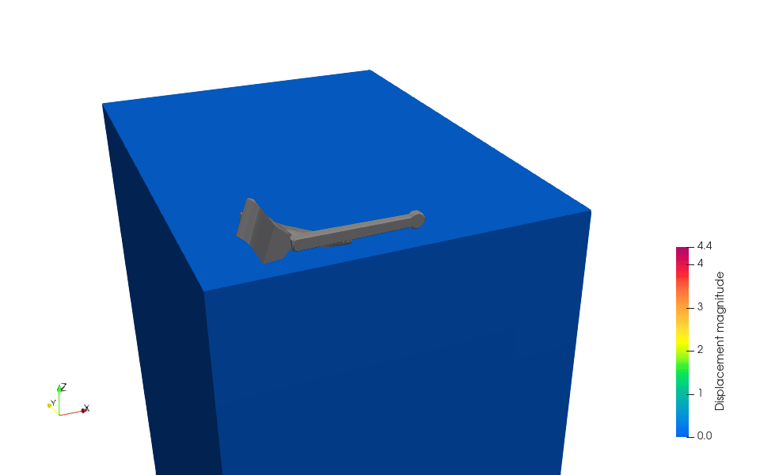
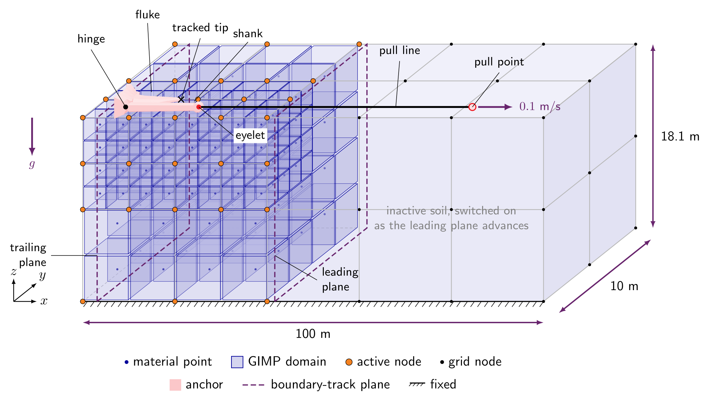
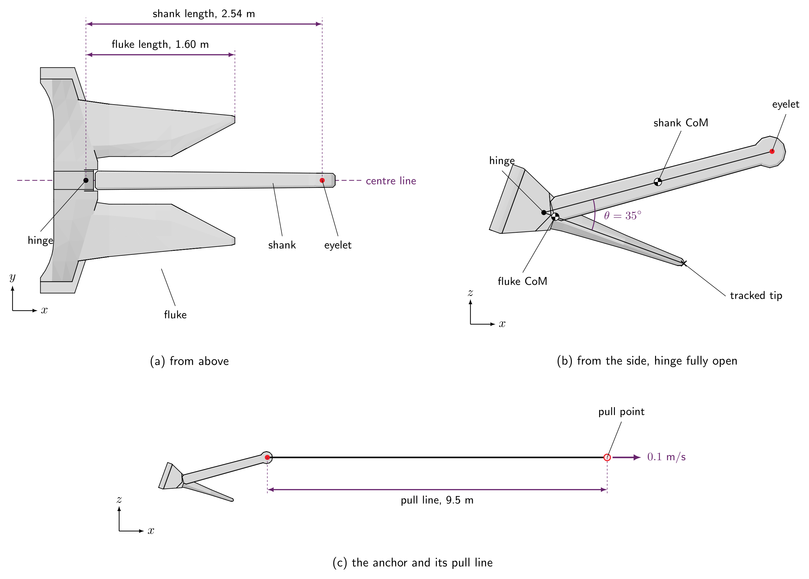
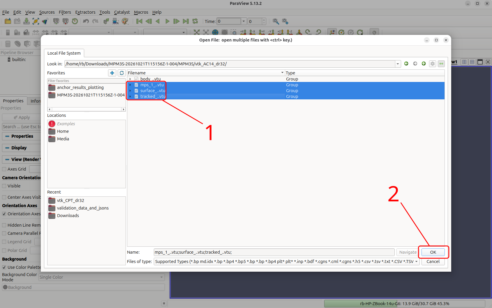
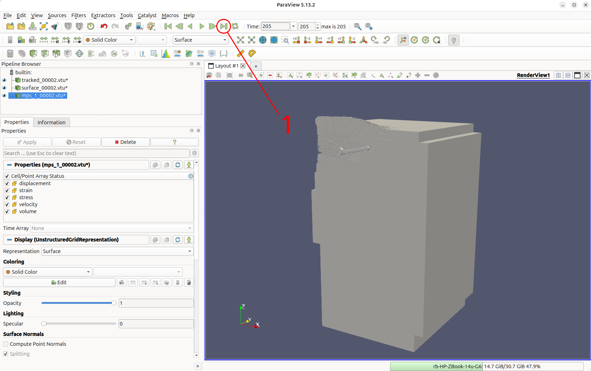
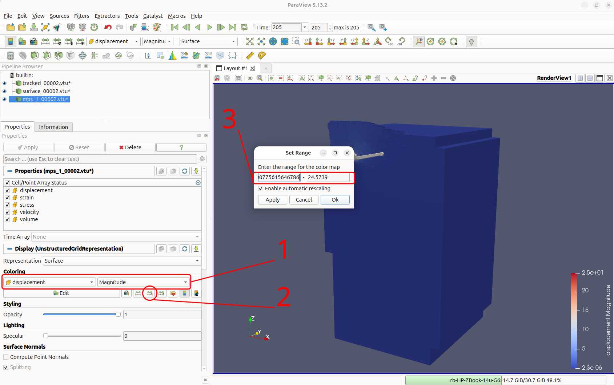
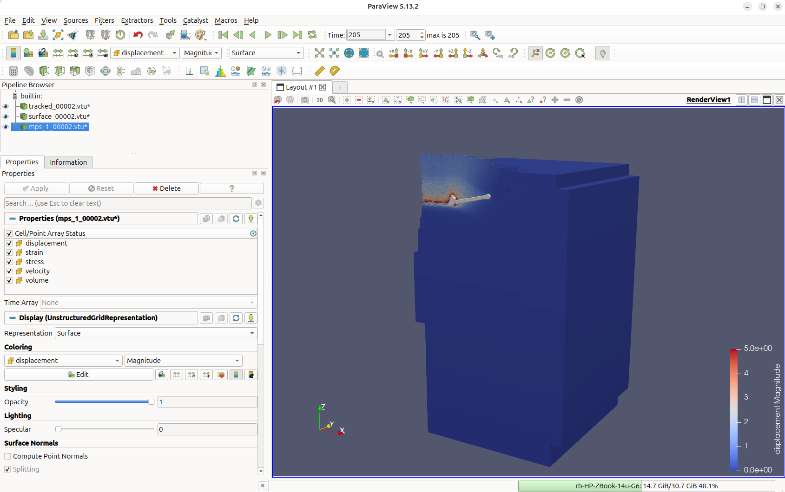
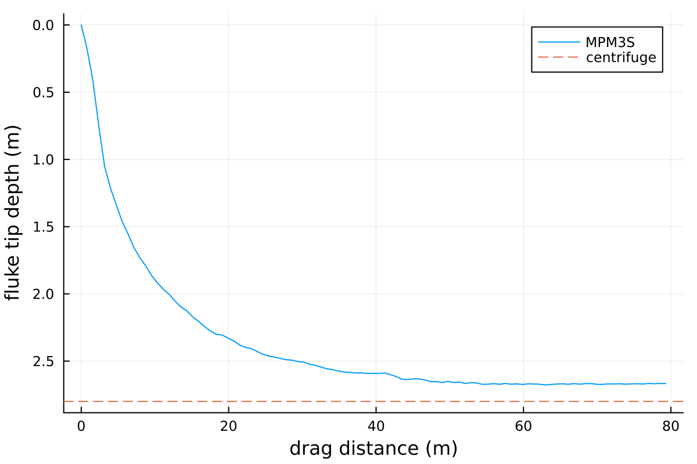
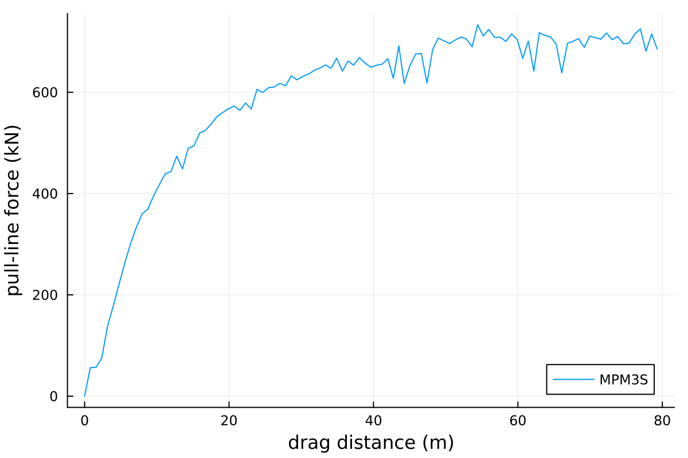

Tutorial 6: Drag anchor¶

Introduction¶
This tutorial combines all the features of the previous tutorials to create a 3D dynamic simulation of an AC-14 drag anchor being pulled through a bed of loose sand.
The problem combines many features of MPM3S: the gravity stage from Tutorial 1, the displacement-controlled rigid body with contact from Tutorial 2, the Willam-Warnke sand with depth-dependent stiffness from Tutorial 3, the frictional contact, dynamic time integration and moving boundaries from Tutorial 5, and an articulated anchor built from three points joined by a hinge, an angle stop and a pull line.
This tutorial has four sections:
Problem description¶
You will model an anchor (AC14) being dragged through a subsurface soil. To do this, you will define the soil, the anchor, the three loading stages, the solver and the output in the input file, using the input_data.json file format.
Figure 1 shows the model at the start of stage 2. To reduce the problem size, only half of the anchor and soil is modelled, using the vertical \(xz\) plane of symmetry at \(y = 0\). The anchor's fluke and shank are joined at a hinge, with the fluke starting turned \(20^\circ\) tip-down, and a pull line drags the anchor at \(0.1\) m/s. A tracked node at the fluke tip records its position as the anchor embeds. Instead of solving the whole length of soil the anchor passes through, a boundary track keeps only a window of soil active, from \(0.5\) m behind to \(2.5\) m ahead of the anchor. The elements around the anchor are refined down to \(0.1\) m; the figure only shows this schematically.

Soil block: The soil is \(120\) m long, \(10\) m wide and \(18.123\) m deep. As in Tutorial 3, the mesh is refined around the rigid body: the elements which intersect the anchor are refined to \(0.1\) m, while those far from it are \(2.0\) m, and every element is created with \(2 \times 2 \times 2\) material points. Because the mesh is an octree whose smallest element is \(0.1\) m, MPM3S adjusts these sizes (see how element sizes set the mesh):
- element sizes are rounded down to a power-of-two multiple of \(0.1\) m, so the mesh is never coarser than requested: the \(2.0\) m elements become \(0.1 \times 2^4 = 1.6\) m;
- the \(x\) and \(y\) dimensions are rounded up to whole elements: \(120 \times 11.2\) m;
- the depth is rounded up to a whole row of material points (\(0.8\) m), as the top is a free surface rather than a boundary and therefore no boundary conditions need to be applied at nodes: \(18.123\) m becomes \(18.4\) m
Loading: Three stages:
- Stage 1 - initial stresses: static; the anchor is switched off and gravity is ramped up over 5 load steps.
- Stage 2 - settling: dynamic, \(1\) s in steps of \(0.005\) s; the anchor is placed on the soil surface and settles under its own weight with the pull point held still.
- Stage 3 - drag: dynamic, \(800\) s in steps of \(0.04\) s; the pull point moves in \(+x\) at \(0.1\) m/s, dragging the anchor \(80\) m.
Boundary conditions: The boundary conditions are defined separately for each stage. In every stage the base is fixed, and the side at \(y = 0\) (the plane of symmetry) and the opposite side carry rollers; the top face lies in the empty space above the soil, so its condition has no effect. Only the two ends, the \(x\) faces, change:
- Stage 1 - initial stresses: all vertical sides are rollers, the bottom face is fixed.
- Stage 2 - settling: a boundary track replaces both ends with fixed planes that move with the anchor: one \(0.5\) m behind it, which deletes the soil the anchor leaves behind, and one \(2.5\) m ahead of it (for the purposes of this tutorial - default would be to set it to \(5.0\) m). The two \(y\) sides stay rollers. On the plane of symmetry, \(y = 0\), the roller stops the soil moving in \(y\) but leaves it free to slide in \(x\) and \(z\), which is exactly the symmetry condition: the modelled half behaves as one half of the full anchor and soil. The opposite side, at \(y = 11.2\) m (the \(10\) m width rounded up to whole elements), is held the same way, far enough from the anchor that it has little effect. The base stays fixed.
- Stage 3 - drag: same boundary conditions as stage 2, with the leading plane moved to \(5\) m ahead of the anchor.
Material: Willam-Warnke elasto-plastic sand at a relative density of \(D_r = 32\%\), fully drained conditions, with the parameters from the Brinkgreve correlations 1:
| Property | Correlation | Value at \(D_r = 32\%\) | Input key |
|---|---|---|---|
| Reference Young's modulus | \(E^{ref} = 60\,000\; D_r/100\) kPa | \(19.2\) MPa | "E": 1.92e7 |
| Friction angle | \(\phi = 28 + 12.5\; D_r/100\) | \(32^\circ\) | "friction angle": 32.0 |
| Dilation angle | \(\psi = -2 + 12.5\; D_r/100\), not below 0 | \(2^\circ\) | "dilation angle": 2.0 |
| Buoyant unit weight | \(\gamma' = 19 + 1.6\; D_r/100 - \gamma_w\) kN/m\(^3\) | \(9.702\) kN/m\(^3\) | - |
| Buoyant density | \(\rho' = \gamma'/g\), with \(g = 10\) m/s\(^2\) | \(970.2\) kg/m\(^3\) | "density": 970.2 |
| Stiffness exponent | \(m = 0.7 - D_r/320\) | \(0.6\) | "exponent": 0.6 |
| Earth pressure at rest | \(K_0 = 1 - \sin\phi\) | \(0.4701\) | "reference stress" (below) |
| Poisson's ratio | - | \(0.25\) | "nu": 0.25 |
| Cohesion | - | \(0.3\) kPa | "cohesion": 300.0 |
\(\gamma_w = 9.81\) kN/m\(^3\) is the unit weight of water, note that the buoyant density and weights are used as the sand is submerged. As in Tutorial 3, the reference stress for the depth-dependent stiffness is \(p^{ref}/K_0 = 100/0.4701 = 212.7\) kPa.
Anchor: The AC-14 anchor (see Figure 2) has two parts, a fluke and a shank, joined by a hinge. Each part is a rigid body welded to a rigid body point at its centre of mass. A third rigid body point with no geometry is the end of the pull line; moving it drags the anchor. Because only half the anchor is modelled, the masses are halved (the full anchor is \(8700\) kg). As in the reference simulations, the fluke starts turned \(20^\circ\) tip-down about the hinge: AC14_fluke_rot20.stl is drawn already turned, and point 1, the fluke's end of the opening-angle stop and the tracked tip are turned with it.

Figure adapted from 2.
The anchor is made of three points, and three constraints join them:
| Point | Represents | Position as drawn (m) | Mass (kg) | Rotational inertia (kg\(\cdot\)m\(^2\)) | Geometry |
|---|---|---|---|---|---|
| 1 | Fluke centre of mass | \((0.6121, 0, -0.0448)\) | \(3291.6\) | \(275\) | AC14_fluke_rot20.stl |
| 2 | Shank centre of mass | \((1.7592, 0, 0)\) | \(1058.4\) | \(337.5\) | AC14_shank.stl |
| 3 | Pull point | \((12.5123, 0, -0.5703)\) | \(1\) | \(10^{-6}\) | none |
| Constraint | Type | Points | Details |
|---|---|---|---|
| Hinge | "rotation lock" |
1, 2 | Pin at \((0.489, 0, 0)\) with the axis of rotation along \(y\); pin stiffness \(10^9\) N/m, axis stiffness \(10^8\) N\(\cdot\)m. |
| Opening-angle stop | "distance stop" |
1, 2 | Starts with the hinge open \(20^\circ\) and goes taut when it has opened \(35^\circ\); stiffness \(EA/l = 8.58 \times 10^9\) N/m, with \(EA = 10^{10}\) N and \(l = 1.165\) m the distance between the two centres of mass at \(35^\circ\). |
| Pull line | "distance lock" |
2, 3 | A \(9.5\) m rod from the shank's eyelet at \((3.0294, 0, 0)\) to the pull point; stiffness \(EA/L\) with \(EA = 10^{10}\) N. |
Frictional contact between the anchor and the sand uses \(\mu = 0.45\).
Solver: Newton-Raphson, pseudo-static for stage 1 and implicit dynamic for stages 2 and 3.
Input setup¶
The input file is a single JSON object - a human-readable, editable text file. The complete file for this problem can be found here, and every key is described on the input_data.json file format page.
input_data_AC14_dr32.jsonMaterial points¶
- One layer of Willam-Warnke sand, with the properties from the Problem description (material points).
- A \(120 \times 10\) m footprint, whose \(y = 0\) side is the plane of symmetry.
- \(2.0\) m base elements (rounded to \(1.6\) m), each starting with \(2 \times 2 \times 2\) material points.
"material points": {
"extra capacity": 1.2,
"element size": 2.0,
"number of material points per element 1": 2,
"material size": { "min": [0.0, 0.0], "max": [120.0, 10.0] },
"layers": [
{
"thickness": 18.123,
"material": { "type": "willam warnke",
"E": 1.92e7, "nu": 0.25,
"friction angle": 32.0, "dilation angle": 2.0, "cohesion": 300.0,
"density": 970.2,
"E overburden": { "reference stress": 212729.0, "exponent": 0.6 } }
}
]
},
Rigid body: points¶
- The anchor is one rigid-body system of three points.
- Points 1 and 2 are the centres of mass of the fluke and the shank:
- their boundary conditions leave them free to move in the \(xz\) plane and to turn about \(y\);
- the other three degrees of freedom are fixed by the symmetry.
- Point 3 is the end of the pull line:
- it has no geometry and only a nominal mass, so all six of its degrees of freedom are fixed;
- stage 3 replaces its \(x\) condition to pull it.
- The shank is drawn along the \(x\) axis, with the fluke turned \(20^\circ\) tip-down below it, so point 1 sits just below the axis.
- Point 3 is drawn level with the fluke tip, the anchor's lowest node, so that when the anchor is placed on the soil the pull point rests on the surface too.
"offset"moves the whole system \(1\) m in \(+x\), so that the anchor does not overhang the soil.
"rigid bodies": [
{
"offset": [1.0, 0.0, 0.0],
"points": [
{ "position": [0.6121, 0.0, -0.044805], "mass": 3291.6, "rotational inertia": [275.0, 275.0, 275.0],
"boundary conditions": ["free", "fixed", "free", "fixed", "free", "fixed"] },
{ "position": [1.7592, 0.0, 0.0], "mass": 1058.4, "rotational inertia": [337.5, 337.5, 337.5],
"boundary conditions": ["free", "fixed", "free", "fixed", "free", "fixed"] },
{ "position": [12.51226633, 0.0, -0.5703035], "mass": 1.0, "rotational inertia": [1.0e-6, 1.0e-6, 1.0e-6],
"boundary conditions": ["fixed", "fixed", "fixed", "fixed", "fixed", "fixed"] }
],
Rigid body: constraints¶
"rotation lock"- the hinge between the fluke (point 1) and the shank (point 2):- the two parts are pinned together at the
"rotation centre", \((0.489, 0, 0)\); "direction 1"and"direction 2", the hinge axis carried by each part, are both along \(y\) and are kept aligned, so the parts can only turn relative to each other about \(y\);"stiffness", \(10^9\) N/m, holds the pin together, and"rotational stiffness", \(10^8\) N\(\cdot\)m, keeps the two axes aligned.
- the two parts are pinned together at the
"distance stop"- limits how far the hinge opens (the angle between the fluke and the shank):- it is a penalty force between two constraint points, one moving with point 1 and one with point 2;
"position 1", carried by the fluke, starts at the fluke's centre of mass, \((0.6121, 0, -0.0448)\), and"position 2", carried by the shank, starts where that centre would be with the hinge closed, \((0.62, 0, 0)\), so the opening about the"rotation centre"starts at \(20^\circ\);- as the hinge opens further the two points move apart, and when the opening reaches the
"angle limit", \(35^\circ\), the penalty force becomes active and resists any more opening; "stiffness", \(8.58 \times 10^9\) N/m, is \(EA/l\) with \(EA = 10^{10}\) N and \(l = 1.165\) m, the distance between the two centres of mass at \(35^\circ\).
"distance lock"- the pull line between the shank (point 2) and the pull point (point 3):- a \(9.5\) m rod from the shank's eyelet,
"position 1", \((3.0294, 0, 0)\), to the pull point,"position 2", \((12.5123, 0, -0.5703)\); "stiffness", \(1.05 \times 10^9\) N/m, is \(EA/L\) with \(EA = 10^{10}\) N and \(L = 9.5\) m.
- a \(9.5\) m rod from the shank's eyelet,
"constraints": [
{ "type": "rotation lock", "points": [1, 2],
"rotation centre": [0.489, 0.0, 0.0],
"direction 1": [0.0, 1.0, 0.0],
"direction 2": [0.0, 1.0, 0.0],
"stiffness": 1.0e9, "rotational stiffness": 1.0e8 },
{ "type": "distance stop", "points": [1, 2],
"rotation centre": [0.489, 0.0, 0.0],
"position 1": [0.6121, 0.0, -0.044805],
"position 2": [0.62, 0.0, 0.0],
"angle limit": 35.0, "stiffness": 8.5814e9 },
{ "type": "distance lock", "points": [2, 3],
"position 1": [3.0294, 0.0, 0.0],
"position 2": [12.51226633, 0.0, -0.5703035],
"distance": 9.5, "stiffness": 1.0526e9 }
],
Rigid body: geometry¶
- The fluke surface is welded to point 1 and the shank surface to point 2 (STL files).
- Both STL files are drawn in global coordinates, in the same frame as the points;
AC14_fluke_rot20.stlhas the fluke already turned \(20^\circ\) tip-down. - Their tetrahedral meshes are stored in the mesh-cache files.
"tracked nodes"adds a marker at the fluke tip, \((1.994, 0.6489, -0.5478)\), welded to point 1 (tracked nodes):- it has no mass and takes no part in the contact;
- its position is written to
rigid_body.csvastrack1_x,track1_yandtrack1_z, following the fluke tip through the drag.
Contact¶
- Coulomb friction with \(\mu = 0.45\) between the anchor and the sand (contact properties).
Stage 1: initial stresses¶
- Static, with the anchor switched off.
- Gravity is ramped up from zero over 5 load steps.
- A uniform \(1.6\) m mesh (adaptivity).
- Rollers on the four vertical faces and a fixed base; the top face lies in the empty space above the soil (boundary conditions).
Stage 2: settling¶
- Dynamic, \(1\) s in steps of \(0.005\) s: the anchor settles into the sand under its own weight while the pull point stays where it is.
"rigid body surface placement": "on"first moves the anchor vertically so that it rests on the soil surface.- \(\beta = 0.5\) and \(\gamma = 1.0\) add numerical damping.
- The mesh is refined to \(0.1\) m wherever the fluke and shank surfaces are (adaptivity).
"boundary track"replaces the two \(x\) ends with fixed planes that follow the anchor (boundary track):- one \(0.5\) m behind it, which deletes the soil the anchor leaves behind;
- one \(2.5\) m ahead of it; the soil beyond it stays inactive until the plane reaches it.
{
"type": "dynamic",
"dt": 5.0e-3,
"final time": 1.0,
"beta": 0.5,
"gamma": 1.0,
"rigid bodies": "on",
"rigid body surface placement": "on",
"adaptivity": {
"type": "rigid body surface",
"element size": 0.1
},
"boundary conditions": { "min": ["fixed", "roller", "fixed"], "max": ["roller", "roller", "fixed"] },
"boundary track": {
"min": { "type": ["fixed", "off", "off"], "distance": [0.5, 0.0, 0.0],
"advance": ["positive", "positive", "positive"], "remove": ["yes", "no", "no"] },
"max": { "type": ["fixed", "off", "off"], "distance": [2.5, 0.0, 0.0],
"advance": ["positive", "positive", "positive"], "remove": ["no", "no", "no"] }
}
},
Stage 3: drag¶
- The drag itself: dynamic, \(800\) s in steps of \(0.04\) s.
"rigid body boundary conditions"replaces the pull point's conditions (system 1, point 3) for this stage only, prescribing \(0.004\) m in \(+x\) every step - \(0.1\) m/s (rigid body boundary conditions).- The anchor is already in place, so
"rigid body surface placement"is"off". - The leading plane of the boundary track moves to \(5\) m ahead of the anchor.
"region": 0.06also refines the elements within \(0.06\) m of those the anchor's surface passes through to"element size in region", \(0.1\) m, so the fine mesh extends just beyond the anchor."final time": 800.0drags the pull point \(80\) m in \(20\,000\) steps. For a quick first run, reduce it, for example to \(3.0\) s for a \(0.3\) m drag.
{
"type": "dynamic",
"dt": 0.04,
"final time": 800.0,
"beta": 0.5,
"gamma": 1.0,
"rigid bodies": "on",
"rigid body surface placement": "off",
"adaptivity": {
"type": "rigid body surface",
"element size": 0.1,
"region": 0.06,
"element size in region": 0.1
},
"rigid body boundary conditions": [
{ "system": 1, "point": 3, "boundary conditions": [{ "prescribed": 0.004 }, "fixed", "fixed", "fixed", "fixed", "fixed"] }
],
"boundary conditions": { "min": ["fixed", "roller", "fixed"], "max": ["roller", "roller", "fixed"] },
"boundary track": {
"min": { "type": ["fixed", "off", "off"], "distance": [0.5, 0.0, 0.0],
"advance": ["positive", "positive", "positive"], "remove": ["yes", "no", "no"] },
"max": { "type": ["fixed", "off", "off"], "distance": [5.0, 0.0, 0.0],
"advance": ["positive", "positive", "positive"], "remove": ["no", "no", "no"] }
}
}
],
Solver¶
- Newton-Raphson iterations to a tolerance of \(10^{-6}\) in each step (solver).
- A step that has not converged after 20 iterations is retried with half the increment.
- The same ghost stabilisation settings as Tutorial 3.
Output¶
- VTK files for ParaView are written to
vtk_AC14_dr32every \(1\%\) of a stage's steps (output). - CSV files are written to
csv_AC14_dr32every \(0.25\%\). rigid_body.csvrecords the position, velocity, reaction force and reaction moment of all three points, then the position of the tracked fluke tip; the anchor's trajectory and holding force are calculated from it.
"output": {
"vtk": "on",
"vtk directory": "vtk_AC14_dr32",
"vtk percent": 1.0,
"vtk material point fields": ["displacement", "velocity", "stress", "strain", "volume"],
"vtk rigid body fields": ["position", "velocity", "reaction force"],
"csv": "on",
"csv directory": "csv_AC14_dr32",
"csv percent": 0.25,
"csv material point fields": ["initial position", "position", "stress"],
"csv rigid body fields": ["position", "velocity", "reaction force", "reaction moment"]
}
Deploying and running the problem¶
MPM3S is written in the Julia programming language. See the installation guide for installing Julia and MPM3S, and Tutorial 1 for a first, small run.
Working in the MPM3S folder
Julia runs in the MPM3S folder - the folder you downloaded - throughout this tutorial, and every path in the commands and scripts is relative to it. The input file is read from validation_data_and_jsons/input_data_AC14_dr32.json, and the output folder csv_AC14_dr32 (and vtk_AC14_dr32, if VTK output is switched on) is written to the MPM3S folder.
terminalSetting up the problem¶
The input file for this tutorial comes with MPM3S, as validation_data_and_jsons/input_data_AC14_dr32.json, together with the anchor geometry - AC14_fluke_rot20.stl, AC14_shank.stl and their mesh caches, AC14_fluke_rot20_mesh.txt and AC14_shank_mesh.txt; the input file is the same as the complete input file. The STL and mesh-cache paths in the input file are relative to the input file, so the files must stay in the same folder.
As in Tutorial 1, open a terminal, start Julia with every CPU thread available (-t auto), then move into the folder where you downloaded MPM3S, activate it, install its dependencies with Pkg.instantiate() and load MPM3S. The output folder csv_AC14_dr32 is created in the MPM3S folder.
Running the problem¶
Julia is now running in the MPM3S folder and MPM3S loaded. The JSON file for this problem is loaded with MPM3S and is stored in the folder validation_data_and_jsons, the simulations are started with:
This is a large analysis, run on an NVIDIA GPU ("GPU": "on"); without one, set "GPU": "off" and run it on an HPC node.
validation_data_and_jsons also has the same problem in sand at \(D_r = 7\), \(64\) and \(88\%\) (input_data_AC14_dr7.json, input_data_AC14_dr64.json and input_data_AC14_dr88.json), and for the Hall anchor at all four densities (input_data_Hall_dr7.json to input_data_Hall_dr88.json).
Reading the output¶
The progress line works as in Tutorial 1, counting through stage 1/3, stage 2/3 and stage 3/3:
- Stage 1: the uniform mesh fills the whole \(204.8\) m background cube with \(1.6\) m elements, hence the 2.1 million nodes (
N). - Start of stage 2: MPM3S reports the rigid body surface placement. The anchor's lowest node, the fluke tip (
body base, at \(-0.5703\) m in the drawn frame), is moved up byΔzto the soil surface (material top), which has settled from \(18.4\) m to \(18.2894\) m under the weight of the sand. - Stage 2:
Ndrops to a few thousand: the background mesh now covers only the active window of soil inside the boundary track, refined around the anchor. - Stage 3: the output shows the drag part-way through, at \(54\%\). Steps that do not converge are retried with half the increment (
cuts), and material points next to the anchor that become too distorted are deleted (del).
$ julia -t auto
julia> cd("path/to/MPM3S")
julia> using Pkg; Pkg.activate(".")
Activating project at `path/to/MPM3S`
julia> Pkg.instantiate()
julia> using MPM3S
julia> MPM3S.non_linear_solve("validation_data_and_jsons/input_data_AC14_dr32.json");
stage 1/3 ████████████ 100.0% t 1.0/1.0 step 6 Δt 0.2 NR 3 cuts 0 del 0 N 2146689
[ Info: rigid body surface placement: body base -0.570303 → material top 18.2894 Δz = 18.8597
stage 2/3 ████████████ 100.0% t 1.0/1.0 step 206 Δt 0.005 NR 4 cuts 0 del 0 N 4500
stage 3/3 ██████░░░░░░ 54.0% t 432.0/800.0 step 11117 Δt 0.04 NR 10 cuts 220 del 19814 N 6856
Viewing the results¶
Visualising the output in ParaView¶
The VTK files are written to vtk_AC14_dr32 (see Output). The walkthrough below uses the same ParaView controls as Tutorial 1. Only active material points are written, so once the anchor is on the soil the output shows the window of soil around it rather than the whole block.
1. Open the soil and the anchor. File → Open and go to vtk_AC14_dr32. Hold Ctrl and select the mps_1_..vtu (soil), surface_..vtu (fluke and shank) and tracked_..vtu (the fluke-tip marker) series (1), then click OK (2).

2. Go to the end of the drag. Click Apply, then click Last Frame (▶|) (1) to go to the last output step. The soil shown is the window of active material points around the anchor, with the half anchor on the plane of symmetry.

3. Colour by displacement. With mps_1_..vtu selected in the Pipeline Browser, set Coloring to displacement and Magnitude (1). The full range, up to about \(25\) m, leaves most of the soil the same colour, so click Rescale to Custom Range (2), enter 0 and 5 (3) and click Ok.

4. Play the drag. The soil moves around the anchor and barely at all away from it. Click First Frame (|◀) and then Play (▶) to watch the anchor settle and drag, with the window of active soil moving with it.

Anchor trajectory and holding force¶
csv_AC14_dr32/rigid_body.csv has one row per output step, with columns for each point - body1 the fluke, body2 the shank and body3 the pull point - followed by track1_x, track1_y and track1_z, the position of the tracked fluke tip:
- Pull-line force:
body3_reaction force_xis the force needed to move the pull point, i.e. the pull the anchor resists. Only half the anchor is modelled, so the force on the whole anchor is twice this. - Drag distance:
body3_position_xminus its value at the start of stage 3. - Embedment:
track1_z, the height of the fluke tip, at \(t = 0\) of stage 3 minus its current value. The anchor is placed on the soil surface at the start of stage 2 and settles in during it, so the fluke tip starts stage 3 at \(18.2538\) m, just below the surface (thematerial topin the rigid body surface placement message, \(18.2894\) m).
The time column restarts at the start of each stage.
The short Julia script below plots the depth of the fluke tip against the drag distance in stage 3, with the final depth measured in the centrifuge, \(2.8\) m 3. Run it from the MPM3S folder, either by copying it into the REPL or by saving it as anchor_depth.jl and running include("anchor_depth.jl"). It needs Plots, installed as described in Tutorial 1.
using DelimitedFiles, Plots
# one row per output step, through all three stages
data, header = readdlm("csv_AC14_dr32/rigid_body.csv", ',', Float64; header=true)
column(name) = data[:, findfirst(==(name), vec(header))]
x_pull = column("body3_position_x") # pull point (m)
z_tip = column("track1_z") # height of the fluke tip (m)
# stage 3, the drag: the pull point is held still until then, so the last row before it moves is t = 0 of stage 3
i0 = findfirst(x_pull .> x_pull[1]) - 1
s = i0:length(x_pull)
drag = x_pull[s] .- x_pull[i0] # drag distance (m)
depth = z_tip[i0] .- z_tip[s] # depth of the fluke tip below its position at t = 0 (m)
println("final depth: MPM3S ", round(depth[end], digits=2), " m, centrifuge 2.8 m")
plot(drag, depth, yflip=true, label="MPM3S", xlabel="drag distance (m)", ylabel="fluke tip depth (m)", legend=:topright)
hline!([2.8], linestyle=:dash, label="centrifuge")
For this run it prints:

The fluke tip dives quickly over the first \(20\) m of drag, then levels off at about \(2.7\) m below where it started. The second script, run after the first, plots the pull-line force on the whole anchor. It rises as the anchor embeds and then fluctuates about a steady value once the depth levels off.
# run after anchor_depth.jl, which reads the data and sets s and drag
F_pull = column("body3_reaction force_x") # force on the pull point, half the anchor (N)
force = -2 .* F_pull[s] ./ 1e3 # the whole anchor: twice the half model (kN)
# the force settles to a steady value once the anchor stops diving; average it over the last 20 m
steady = drag .> drag[end] - 20
println("steady pull-line force: ", round(sum(force[steady]) / count(steady)), " kN")
plot(drag, force, label="MPM3S", xlabel="drag distance (m)", ylabel="pull-line force (kN)", legend=:bottomright)
For this run it prints:

Loads on the fluke and the shank
For the load on the fluke or the shank alone, follow the ParaView steps for the cone tip in Tutorial 3. Select the triangles corresponding to the shank, or the fluke, from surface_..vtu, to get the forces. Remember, only half the anchor was modelled, so double the final result to get the total load for each component.
-
R.B.J. Brinkgreve, E. Engin, and H.K. Engin. Validation of empirical formulas to derive model parameters for sands. In Numerical Methods in Geotechnical Engineering, pages 137–142. CRC Press, 2010. ↩
-
Robert E. Bird, William M. Coombs, Michael J. Brown, Charles E. Augarde, Yaseen U. Sharif, Giuliano Pretti, Catriona Macdonald, Duncan Stevens, and Gareth Carter. Three-dimensional modelling of drag anchor penetration using the material point method. Ocean Engineering, 358:125456, 2026. ↩
-
Yaseen Umar Sharif, Michael John Brown, Jonathan Adam Knappett, Craig Davidson, Robert Bird, Will Coombs, Charles Augarde, Gareth Carter, Catriona Macdonald, and Kirstin Johnson. Comparison of 1g and centrifuge modelling of drag anchors with subsurface wireless tracking. International Journal of Physical Modelling in Geotechnics, 25(2):102–114, 2025. ↩